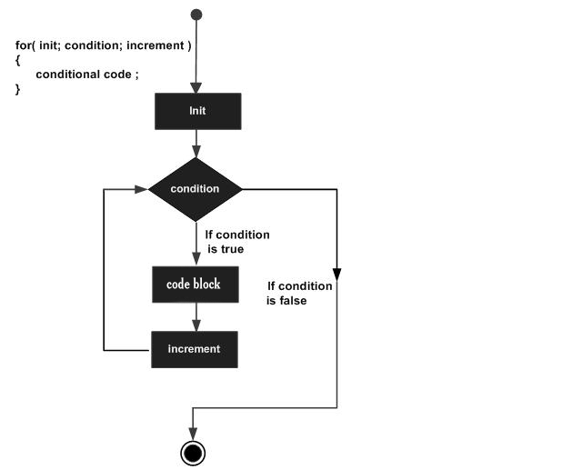
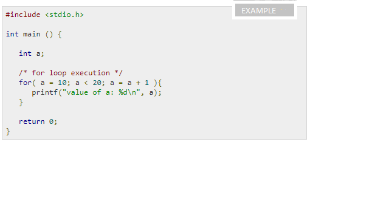
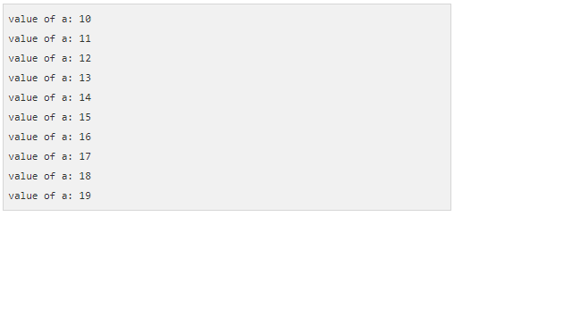
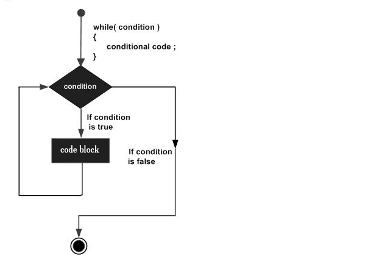
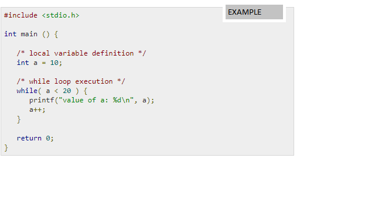
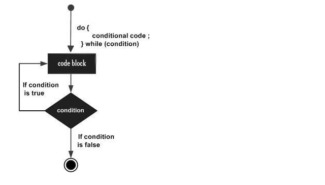
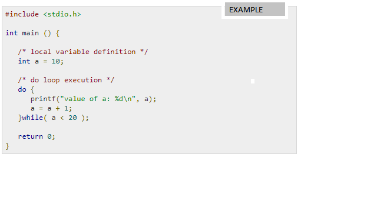

LOOPS In C Programming
You may encounter situations when a block of code needs to be executed several number of times. In general, statements are executed sequentially: The first statement in a function is executed first, followed by the second, and so on.
Programming languages provide various control structures that allow for more complicated execution paths.
A loop statement allows us to execute a statement or group of statements multiple times. Given below is the general form of a loop statement in most of the programming languages:
How to use Loops in C
In any programming language including C, loops are used to execute a set of statements repeatedly until a particular condition is satisfied.
How it Works
TYPES OF LOOP CONTROL STATEMENTS IN C:
There are 3 types of loop control statements in C language. They are,
TYPES OF LOOP CONTROL STATEMENTS IN C: There are 3 types of loop control statements in C language. They are,
->for
->while
->do-while
for loop
A loop is used for executing a block of statements repeatedly until a given condition returns false.
This is one of the most frequently used loop in C programming.
Syntax of for loop:
for (initialization; condition test; increment or decrement)
{
//Statements to be executed repeatedly
}
Flow Diagram of For loop
Here is the flow of control in a 'for' loop -
->The init step is executed first, and only once. This step allows you to declare and initialize any loop control variables. You are not required to put a statement here, as long as a semicolon appears.
->Next, the condition is evaluated. If it is true, the body of the loop is executed. If it is false, the body of the loop does not execute and the flow of control jumps to the next statement just after the 'for' loop.
->After the body of the 'for' loop executes, the flow of control jumps back up to the increment statement. This statement allows you to update any loop control variables. This statement can be left blank, as long as a semicolon appears after the condition.
->The condition is now evaluated again. If it is true, the loop executes and the process repeats itself (body of loop, then increment step, and then again condition). After the condition becomes false, the 'for' loop terminates.
Example
When the above code is compiled and executed, it produces the following result -
while loop
A while loop in C programming repeatedly executes a target statement as long as a given condition is true.
Syntax
The syntax of a while loop in C programming language is -
while(condition) {
statement(s);
}
Here, statement(s) may be a single statement or a block of statements. The condition may be any expression, and true is any nonzero value.
The loop iterates while the condition is true.
When the condition becomes false, the program control passes to the line immediately following the loop.
Flow Diagram
Here, the key point to note is that a while loop might not execute at all. When the condition is tested and the result is false, the loop body will be skipped and the first statement after the while loop will be executed.
example
When the above code is compiled and executed, it produces the following result -
do...while loop
Unlike for and while loops, which test the loop condition at the top of the loop, the do...while loop in C programming checks its condition at the bottom of the loop.
A do...while loop is similar to a while loop, except the fact that it is guaranteed to execute at least one time.
Syntax
The syntax of a do...while loop in C programming language is -
do {
statement(s);
} while( condition );
Notice that the conditional expression appears at the end of the loop, so the statement(s) in the loop executes once before the condition is tested.
If the condition is true, the flow of control jumps back up to do, and the statement(s) in the loop executes again. This process repeats until the given condition becomes false.flow diagram
Example
When the above code is compiled and executed, it produces the following result -